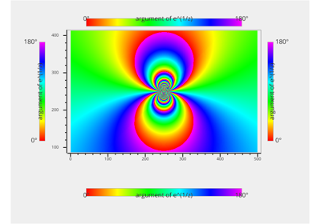
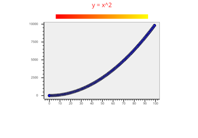
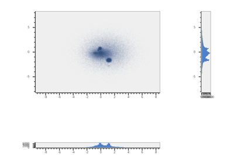
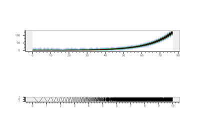
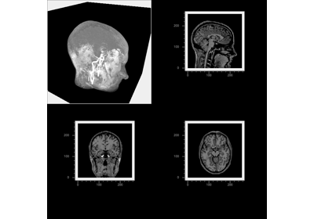

Plotting# More example scripts are available in the VisPy repository’s example scripts directory.  Plot different styles of ColorBar# Boilerplate Interactive Plotting Session# Plot data with different styles#  Line plot and colorbar#  Scatter plot and histograms#  Spectrogram and Line Plot#  Multi-view Volume Plot# Gallery generated by Sphinx-Gallery